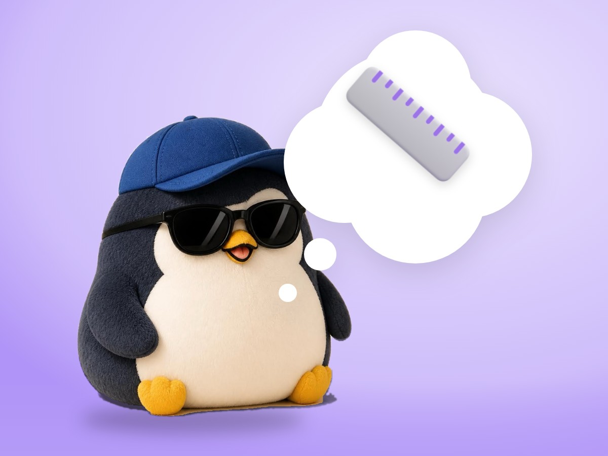

📝 DRAFT · 下書き — まだ本番に出していません · 下書き一覧
🐧 EVERYDAY LIFE⚡ 22 SEC
Measure success by whether you did what you believed, not by the result 📏

Old Ruler
If you measure success only by the result, you always worry, "What if I fail?"
New Ruler
So I change the ruler to "Did I do what I believed in until the end?"
⚡ TRY IT
Same 3 days, 2 rulers
Tap each day to measure it. Then switch the ruler.
😱 Fear meter 😰😌
Pass: 0 / 3
🐧 Same 3 days. With the new ruler, there is nothing to be afraid of.
Always Pass
With this ruler, a day I did it all is a pass, whatever the result.
Not Careless
It does not mean the result does not matter. I just accept that I cannot decide the final result.
📚 I wrote this from my notes on books and blogs I have read.